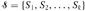
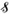

|
|
< Day Day Up > |
|
Some applications involve grouping n distinct elements into a collection of disjoint sets. Two important operations are then finding which set a given element belongs to and uniting two sets. This chapter explores methods for maintaining a data structure that supports these operations.
Section 21.1 describes the operations supported by a disjoint-set data structure and presents a simple application. In Section 21.2, we look at a simple linked-list implementation for disjoint sets. A more efficient representation using rooted trees is given in Section 21.3. The running time using the tree representation is linear for all practical purposes but is theoretically superlinear. Section 21.4 defines and discusses a very quickly growing function and its very slowly growing inverse, which appears in the running time of operations on the tree-based implementation, and then uses amortized analysis to prove an upper bound on the running time that is just barely superlinear.
A disjoint-set data structure maintains a collection  of disjoint dynamic sets. Each set is identified by a representative, which is some member of the set. In some applications, it doesn't matter which member is used as the representative; we only care that if we ask for the representative of a dynamic set twice without modifying the set between the requests, we get the same answer both times. In other applications, there may be a prespecified rule for choosing the representative, such as choosing the smallest member in the set (assuming, of course, that the elements can be ordered).
As in the other dynamic-set implementations we have studied, each element of a set is represented by an object. Letting x denote an object, we wish to support the following operations:
MAKE-SET(x) creates a new set whose only member (and thus representative) is x. Since the sets are disjoint, we require that x not already be in some other set.
UNION(x, y) unites the dynamic sets that contain x and y, say Sx and Sy, into a new set that is the union of these two sets. The two sets are assumed to be disjoint prior to the operation. The representative of the resulting set is any member of Sx ∪ Sy, although many implementations of UNION specifically choose the representative of either Sx or Sy as the new representative. Since we require the sets in the collection to be disjoint, we "destroy" sets Sx and Sy, removing them from the collection .
FIND-SET(x) returns a pointer to the representative of the (unique) set containing x.
Throughout this chapter, we shall analyze the running times of disjoint-set data structures in terms of two parameters: n, the number of MAKE-SET operations, and m, the total number of MAKE-SET, UNION, and FIND-SET operations. Since the sets are disjoint, each UNION operation reduces the number of sets by one. After n - 1 UNION operations, therefore, only one set remains. The number of UNION operations is thus at most n - 1. Note also that since the MAKE-SET operations are included in the total number of operations m, we have m ≥ n. We assume that the n MAKE-SET operations are the first n operations performed.
One of the many applications of disjoint-set data structures arises in determining the connected components of an undirected graph (see Section B.4). Figure 21.1(a), for example, shows a graph with four connected components.
The procedure CONNECTED-COMPONENTS that follows uses the disjoint-set operations to compute the connected components of a graph. Once CONNECTED-COMPONENTS has been run as a preprocessing step, the procedure SAME-COMPONENT answers queries about whether two vertices are in the same connected component.[1] (The set of vertices of a graph G is denoted by V [G], and the set of edges is denoted by E[G].)
CONNECTED-COMPONENTS(G) 1 for each vertex v ∈ V[G] 2 do MAKE-SET(v) 3 for each edge (u, v) ∈ E[G] 4 do if FIND-SET(u) ≠ FIND-SET(v) 5 then UNION(u, v) SAME-COMPONENT(u, v) 1 if FIND-SET(u) = FIND-SET(v) 2 then return TRUE 3 else return FALSE
The procedure CONNECTED-COMPONENTS initially places each vertex v in its own set. Then, for each edge (u, v), it unites the sets containing u and v. By Exercise 21.1-2, after all the edges are processed, two vertices are in the same connected component if and only if the corresponding objects are in the same set. Thus, CONNECTED-COMPONENTS computes sets in such a way that the procedure SAME-COMPONENT can determine whether two vertices are in the same connected component. Figure 21.1(b) illustrates how the disjoint sets are computed by CONNECTED-COMPONENTS.
In an actual implementation of this connected-components algorithm, the representations of the graph and the disjoint-set data structure would need to reference each other. That is, an object representing a vertex would contain a pointer to the corresponding disjoint-set object, and vice-versa. These programming details depend on the implementation language, and we do not address them further here.
Suppose that CONNECTED-COMPONENTS is run on the undirected graph G = (V, E), where V = {a, b, c, d, e, f, g, h, i, j, k} and the edges of E are processed in the following order: (d, i), (f, k), (g, i), (b, g), (a, h), (i, j), (d, k), (b, j), (d, f), (g, j), (a, e), (i, d). List the vertices in each connected component after each iteration of lines 3-5.
[1]When the edges of the graph are "static"-not changing over time-the connected components can be computed faster by using depth-first search (Exercise 22.3-11). Sometimes, however, the edges are added "dynamically" and we need to maintain the connected components as each edge is added. In this case, the implementation given here can be more efficient than running a new depth-first search for each new edge.
|
|
< Day Day Up > |
|